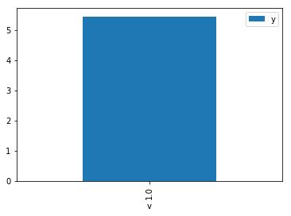

Demo for the DoWhy causal API¶
We show a simple example of adding a causal extension to any dataframe.
[2]:
import os, sys
sys.path.append(os.path.abspath("../../"))
[3]:
import dowhy.datasets
import dowhy.api
import numpy as np
import pandas as pd
from statsmodels.api import OLS
[4]:
data = dowhy.datasets.linear_dataset(beta=5,
num_common_causes=1,
num_instruments = 0,
num_samples=1000,
treatment_is_binary=True)
df = data['df']
df['y'] = df['y'] + np.random.normal(size=len(df)) # Adding noise to data. Without noise, the variance in Y|X, Z is zero, and mcmc fails.
data['dot_graph'] = 'digraph { v ->y;X0-> v;X0-> y;}'
[5]:
# data['df'] is just a regular pandas.DataFrame
df.causal.do(x='v',
variable_types={'v': 'b', 'y': 'c', 'X0': 'c'},
outcome='y',
common_causes=['X0']).groupby('v').mean().plot(y='y', kind='bar')
WARNING:dowhy.causal_model:Causal Graph not provided. DoWhy will construct a graph based on data inputs.
INFO:dowhy.causal_model:Model to find the causal effect of treatment ['v'] on outcome ['y']
/home/amit/python-virtual-envs/env/lib/python3.5/site-packages/sklearn/ensemble/weight_boosting.py:29: DeprecationWarning: numpy.core.umath_tests is an internal NumPy module and should not be imported. It will be removed in a future NumPy release.
from numpy.core.umath_tests import inner1d
INFO:dowhy.causal_identifier:Common causes of treatment and outcome:['U', 'X0']
WARNING:dowhy.causal_identifier:There are unobserved common causes. Causal effect cannot be identified.
WARN: Do you want to continue by ignoring these unobserved confounders? [y/n] y
INFO:dowhy.causal_identifier:Instrumental variables for treatment and outcome:[]
INFO:dowhy.do_sampler:Using WeightingSampler for do sampling.
INFO:dowhy.do_sampler:Caution: do samplers assume iid data.
[5]:
<matplotlib.axes._subplots.AxesSubplot at 0x7f713cd89390>
[6]:
df.causal.do(x={'v': 1},
variable_types={'v': 'b', 'y': 'c', 'X0': 'c'},
outcome='y',
method='weighting',
common_causes=['X0'],
proceed_when_unidentifiable=True).groupby('v').mean().plot(y='y', kind='bar')
WARNING:dowhy.causal_model:Causal Graph not provided. DoWhy will construct a graph based on data inputs.
INFO:dowhy.causal_model:Model to find the causal effect of treatment ['v'] on outcome ['y']
INFO:dowhy.causal_identifier:Common causes of treatment and outcome:['U', 'X0']
WARNING:dowhy.causal_identifier:There are unobserved common causes. Causal effect cannot be identified.
INFO:dowhy.causal_identifier:Continuing by ignoring these unobserved confounders because proceed_when_unidentifiable flag is True.
INFO:dowhy.causal_identifier:Instrumental variables for treatment and outcome:[]
INFO:dowhy.do_sampler:Using WeightingSampler for do sampling.
INFO:dowhy.do_sampler:Caution: do samplers assume iid data.
[6]:
<matplotlib.axes._subplots.AxesSubplot at 0x7f711416e208>

[7]:
cdf_1 = df.causal.do(x={'v': 1},
variable_types={'v': 'b', 'y': 'c', 'X0': 'c'},
outcome='y',
dot_graph=data['dot_graph'],
proceed_when_unidentifiable=True)
cdf_0 = df.causal.do(x={'v': 0},
variable_types={'v': 'b', 'y': 'c', 'X0': 'c'},
outcome='y',
dot_graph=data['dot_graph'],
proceed_when_unidentifiable=True)
INFO:dowhy.causal_model:Model to find the causal effect of treatment ['v'] on outcome ['y']
INFO:dowhy.causal_identifier:Common causes of treatment and outcome:['U', 'X0']
WARNING:dowhy.causal_identifier:There are unobserved common causes. Causal effect cannot be identified.
INFO:dowhy.causal_identifier:Continuing by ignoring these unobserved confounders because proceed_when_unidentifiable flag is True.
INFO:dowhy.causal_identifier:Instrumental variables for treatment and outcome:[]
INFO:dowhy.do_sampler:Using WeightingSampler for do sampling.
INFO:dowhy.do_sampler:Caution: do samplers assume iid data.
INFO:dowhy.causal_model:Model to find the causal effect of treatment ['v'] on outcome ['y']
INFO:dowhy.causal_identifier:Common causes of treatment and outcome:['U', 'X0']
WARNING:dowhy.causal_identifier:There are unobserved common causes. Causal effect cannot be identified.
INFO:dowhy.causal_identifier:Continuing by ignoring these unobserved confounders because proceed_when_unidentifiable flag is True.
INFO:dowhy.causal_identifier:Instrumental variables for treatment and outcome:[]
INFO:dowhy.do_sampler:Using WeightingSampler for do sampling.
INFO:dowhy.do_sampler:Caution: do samplers assume iid data.
[8]:
cdf_0
[8]:
| X0 | v | y | propensity_score | weight | |
|---|---|---|---|---|---|
| 0 | 0.403928 | 0.0 | 2.432356 | 0.589028 | 1.697711 |
| 1 | 0.279008 | 0.0 | -1.216479 | 0.607379 | 1.646418 |
| 2 | -1.063192 | 0.0 | -1.102948 | 0.778464 | 1.284582 |
| 3 | -0.460479 | 0.0 | -1.001995 | 0.708544 | 1.411345 |
| 4 | -0.384204 | 0.0 | 1.008581 | 0.698823 | 1.430977 |
| 5 | 0.486305 | 0.0 | -1.399648 | 0.576787 | 1.733743 |
| 6 | 0.952612 | 0.0 | 0.666174 | 0.506141 | 1.975735 |
| 7 | 1.734657 | 0.0 | 1.136252 | 0.388537 | 2.573756 |
| 8 | 0.162469 | 0.0 | -0.436301 | 0.624230 | 1.601972 |
| 9 | 0.454948 | 0.0 | 1.149705 | 0.581459 | 1.719813 |
| 10 | 2.418322 | 0.0 | 4.043232 | 0.294972 | 3.390156 |
| 11 | -0.225459 | 0.0 | -0.895094 | 0.678016 | 1.474892 |
| 12 | -0.232126 | 0.0 | -0.967473 | 0.678905 | 1.472961 |
| 13 | 1.168640 | 0.0 | 3.631667 | 0.473155 | 2.113473 |
| 14 | 1.159903 | 0.0 | 0.663069 | 0.474486 | 2.107542 |
| 15 | -2.573709 | 0.0 | -3.825602 | 0.898443 | 1.113036 |
| 16 | -1.947548 | 0.0 | -3.231881 | 0.857820 | 1.165745 |
| 17 | 2.066918 | 0.0 | 2.767655 | 0.341513 | 2.928150 |
| 18 | -0.099689 | 0.0 | -2.493016 | 0.661008 | 1.512841 |
| 19 | 0.067214 | 0.0 | 0.407400 | 0.637786 | 1.567923 |
| 20 | 0.355654 | 0.0 | -0.622093 | 0.596152 | 1.677424 |
| 21 | 0.058065 | 0.0 | 0.518388 | 0.639077 | 1.564756 |
| 22 | 2.110771 | 0.0 | 1.983026 | 0.335510 | 2.980534 |
| 23 | 0.550294 | 0.0 | 1.993742 | 0.567212 | 1.763010 |
| 24 | 1.114494 | 0.0 | 0.646450 | 0.481412 | 2.077224 |
| 25 | -1.904864 | 0.0 | -2.301250 | 0.854608 | 1.170127 |
| 26 | 1.426611 | 0.0 | 0.676993 | 0.434093 | 2.303653 |
| 27 | 0.430236 | 0.0 | 0.762308 | 0.585130 | 1.709022 |
| 28 | -0.364460 | 0.0 | -0.605725 | 0.696277 | 1.436210 |
| 29 | -0.016650 | 0.0 | -0.803179 | 0.649543 | 1.539544 |
| ... | ... | ... | ... | ... | ... |
| 970 | 1.858503 | 0.0 | 3.169293 | 0.370711 | 2.697516 |
| 971 | 0.512087 | 0.0 | -0.373805 | 0.572935 | 1.745398 |
| 972 | 0.535486 | 0.0 | 1.478740 | 0.569432 | 1.756136 |
| 973 | -1.594649 | 0.0 | -1.892352 | 0.829430 | 1.205648 |
| 974 | 0.451503 | 0.0 | 0.266634 | 0.581971 | 1.718299 |
| 975 | 0.787764 | 0.0 | 2.118886 | 0.531291 | 1.882207 |
| 976 | 0.965489 | 0.0 | 0.184147 | 0.504173 | 1.983445 |
| 977 | -1.571637 | 0.0 | -1.838201 | 0.827431 | 1.208561 |
| 978 | 1.445333 | 0.0 | 1.422265 | 0.431284 | 2.318657 |
| 979 | -1.001572 | 0.0 | -0.522836 | 0.771900 | 1.295505 |
| 980 | -0.346370 | 0.0 | 0.304536 | 0.693934 | 1.441060 |
| 981 | 2.244912 | 0.0 | 2.894537 | 0.317483 | 3.149770 |
| 982 | 0.910378 | 0.0 | -0.891502 | 0.512592 | 1.950868 |
| 983 | 0.421260 | 0.0 | 0.879862 | 0.586462 | 1.705142 |
| 984 | 0.898803 | 0.0 | 1.197624 | 0.514360 | 1.944164 |
| 985 | 0.486305 | 0.0 | -1.399648 | 0.576787 | 1.733743 |
| 986 | 1.381629 | 0.0 | 0.833731 | 0.440860 | 2.268296 |
| 987 | 0.964047 | 0.0 | 1.859069 | 0.504393 | 1.982579 |
| 988 | 0.044596 | 0.0 | 0.087691 | 0.640974 | 1.560126 |
| 989 | 0.511136 | 0.0 | 1.715394 | 0.573078 | 1.744964 |
| 990 | 1.488634 | 0.0 | -0.646628 | 0.424804 | 2.354025 |
| 991 | -0.744944 | 0.0 | -2.830292 | 0.743112 | 1.345693 |
| 992 | 2.189711 | 0.0 | 1.736144 | 0.324840 | 3.078443 |
| 993 | -0.686813 | 0.0 | -1.729886 | 0.736270 | 1.358197 |
| 994 | 0.120585 | 0.0 | 0.793797 | 0.630216 | 1.586756 |
| 995 | -0.287980 | 0.0 | -0.591574 | 0.686301 | 1.457086 |
| 996 | 1.073967 | 0.0 | 3.002727 | 0.487599 | 2.050866 |
| 997 | 0.937557 | 0.0 | 1.944627 | 0.508441 | 1.966797 |
| 998 | -0.459117 | 0.0 | -1.872491 | 0.708372 | 1.411687 |
| 999 | 0.964047 | 0.0 | 1.859069 | 0.504393 | 1.982579 |
1000 rows × 5 columns
[9]:
cdf_1
[9]:
| X0 | v | y | propensity_score | weight | |
|---|---|---|---|---|---|
| 0 | 0.290789 | 1.0 | 3.979893 | 0.394340 | 2.535886 |
| 1 | 0.512625 | 1.0 | 4.475797 | 0.427145 | 2.341125 |
| 2 | 1.062969 | 1.0 | 6.673199 | 0.510721 | 1.958015 |
| 3 | -0.624970 | 1.0 | 4.060173 | 0.271135 | 3.688195 |
| 4 | -0.148206 | 1.0 | 4.703679 | 0.332379 | 3.008615 |
| 5 | 1.719316 | 1.0 | 5.756267 | 0.609233 | 1.641409 |
| 6 | -0.619271 | 1.0 | 5.680458 | 0.271824 | 3.678846 |
| 7 | 0.977741 | 1.0 | 4.057646 | 0.497699 | 2.009247 |
| 8 | -0.307030 | 1.0 | 4.414821 | 0.311197 | 3.213395 |
| 9 | 0.277186 | 1.0 | 5.519333 | 0.392355 | 2.548710 |
| 10 | -0.857098 | 1.0 | 4.012558 | 0.244021 | 4.098008 |
| 11 | 1.770647 | 1.0 | 7.226577 | 0.616676 | 1.621597 |
| 12 | 1.291454 | 1.0 | 5.838120 | 0.545512 | 1.833139 |
| 13 | 1.144755 | 1.0 | 7.049113 | 0.523204 | 1.911299 |
| 14 | 1.138345 | 1.0 | 6.424092 | 0.522227 | 1.914877 |
| 15 | 1.052117 | 1.0 | 6.936858 | 0.509064 | 1.964391 |
| 16 | 0.637922 | 1.0 | 5.555444 | 0.445981 | 2.242246 |
| 17 | 0.649826 | 1.0 | 6.410330 | 0.447780 | 2.233239 |
| 18 | 2.460420 | 1.0 | 8.792864 | 0.710351 | 1.407754 |
| 19 | 0.243835 | 1.0 | 5.075650 | 0.387506 | 2.580606 |
| 20 | 0.807812 | 1.0 | 4.731404 | 0.471762 | 2.119715 |
| 21 | 1.298341 | 1.0 | 7.758199 | 0.546556 | 1.829639 |
| 22 | 0.240623 | 1.0 | 6.008571 | 0.387040 | 2.583712 |
| 23 | 1.058440 | 1.0 | 6.897561 | 0.510030 | 1.960671 |
| 24 | 0.069249 | 1.0 | 7.055973 | 0.362501 | 2.758612 |
| 25 | 1.407864 | 1.0 | 4.980558 | 0.563090 | 1.775916 |
| 26 | -0.692247 | 1.0 | 4.488188 | 0.263085 | 3.801047 |
| 27 | 0.400927 | 1.0 | 5.207265 | 0.410528 | 2.435890 |
| 28 | -1.033904 | 1.0 | 2.990824 | 0.224639 | 4.451583 |
| 29 | -0.776183 | 1.0 | 5.405714 | 0.253260 | 3.948510 |
| ... | ... | ... | ... | ... | ... |
| 970 | 1.304562 | 1.0 | 6.541645 | 0.547498 | 1.826490 |
| 971 | -0.262312 | 1.0 | 5.762821 | 0.317087 | 3.153713 |
| 972 | 1.147639 | 1.0 | 5.315407 | 0.523644 | 1.909694 |
| 973 | 0.184374 | 1.0 | 4.284324 | 0.378915 | 2.639111 |
| 974 | -0.714900 | 1.0 | 4.892138 | 0.260410 | 3.840102 |
| 975 | 1.098240 | 1.0 | 4.752127 | 0.516107 | 1.937582 |
| 976 | 0.400927 | 1.0 | 5.207265 | 0.410528 | 2.435890 |
| 977 | -0.061028 | 1.0 | 3.880924 | 0.344307 | 2.904381 |
| 978 | 1.612085 | 1.0 | 7.568635 | 0.593521 | 1.684859 |
| 979 | 1.329355 | 1.0 | 6.351310 | 0.551250 | 1.814060 |
| 980 | 0.648052 | 1.0 | 4.170338 | 0.447512 | 2.234577 |
| 981 | 1.148671 | 1.0 | 5.878938 | 0.523801 | 1.909120 |
| 982 | -0.749465 | 1.0 | 3.798001 | 0.256361 | 3.900747 |
| 983 | -0.776183 | 1.0 | 5.405714 | 0.253260 | 3.948510 |
| 984 | 0.323076 | 1.0 | 5.351432 | 0.399063 | 2.505872 |
| 985 | -0.743046 | 1.0 | 3.011968 | 0.257110 | 3.889387 |
| 986 | -0.375397 | 1.0 | 5.369006 | 0.302311 | 3.307852 |
| 987 | -0.379267 | 1.0 | 4.455194 | 0.301812 | 3.313317 |
| 988 | 1.768568 | 1.0 | 6.877053 | 0.616376 | 1.622387 |
| 989 | 1.076537 | 1.0 | 5.635090 | 0.512794 | 1.950102 |
| 990 | 1.836512 | 1.0 | 8.447551 | 0.626147 | 1.597068 |
| 991 | 1.546945 | 1.0 | 7.857669 | 0.583881 | 1.712678 |
| 992 | 1.138345 | 1.0 | 6.424092 | 0.522227 | 1.914877 |
| 993 | 0.959500 | 1.0 | 5.087669 | 0.494912 | 2.020562 |
| 994 | -0.727181 | 1.0 | 3.334014 | 0.258967 | 3.861503 |
| 995 | -0.692247 | 1.0 | 4.488188 | 0.263085 | 3.801047 |
| 996 | 1.336478 | 1.0 | 7.996413 | 0.552327 | 1.810523 |
| 997 | 0.722018 | 1.0 | 6.028093 | 0.458715 | 2.180002 |
| 998 | 0.231477 | 1.0 | 5.734336 | 0.385715 | 2.592590 |
| 999 | -0.329909 | 1.0 | 4.198863 | 0.308208 | 3.244566 |
1000 rows × 5 columns
Comparing the estimate to Linear Regression¶
First, estimating the effect using the causal data frame, and the 95% confidence interval.
[10]:
(cdf_1['y'] - cdf_0['y']).mean()
[10]:
$\displaystyle 4.888240895329525$
[11]:
1.96*(cdf_1['y'] - cdf_0['y']).std() / np.sqrt(len(df))
[11]:
$\displaystyle 0.1313720303264358$
Comparing to the estimate from OLS.
[12]:
model = OLS(df['y'], df[['X0', 'v']])
result = model.fit()
result.summary()
[12]:
| Dep. Variable: | y | R-squared (uncentered): | 0.939 |
|---|---|---|---|
| Model: | OLS | Adj. R-squared (uncentered): | 0.938 |
| Method: | Least Squares | F-statistic: | 7629. |
| Date: | Sun, 13 Oct 2019 | Prob (F-statistic): | 0.00 |
| Time: | 18:13:18 | Log-Likelihood: | -1401.9 |
| No. Observations: | 1000 | AIC: | 2808. |
| Df Residuals: | 998 | BIC: | 2818. |
| Df Model: | 2 | ||
| Covariance Type: | nonrobust |
| coef | std err | t | P>|t| | [0.025 | 0.975] | |
|---|---|---|---|---|---|---|
| X0 | 1.1797 | 0.032 | 37.032 | 0.000 | 1.117 | 1.242 |
| v | 4.9677 | 0.053 | 93.266 | 0.000 | 4.863 | 5.072 |
| Omnibus: | 4.477 | Durbin-Watson: | 2.009 |
|---|---|---|---|
| Prob(Omnibus): | 0.107 | Jarque-Bera (JB): | 3.874 |
| Skew: | -0.076 | Prob(JB): | 0.144 |
| Kurtosis: | 2.736 | Cond. No. | 1.97 |
Warnings:
[1] Standard Errors assume that the covariance matrix of the errors is correctly specified.